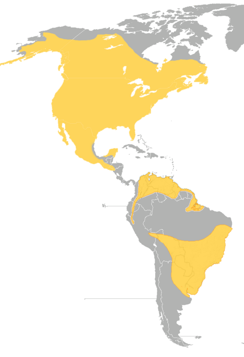

Quick Facts
- Size: 18-25 inches
- Weight: 2-5.5 pounds
- Lifespan: 13-15 years; Up to 30 in captivity
- Conservation Status: Least Concern
- Range: Much of North and South America
Key Nighttime Adaptations
Great horned owls possess exceptional night vision due to their cylindrically-shaped eyes letting in massive amounts of light. Through the use of extra vertebrae, the great horned owl has adapted its neck to rotate up to 270 degrees to account for their fixed eye position.
Diet
Great horned owl are carnivorous through and through. They primarily hunt rodents and rabbits, but are powerful enough to take down larger prey, including raccoons, skunks, porcupines, falcons, and even other owls.
Role in Ecosystem
Great horned owls are apex predators. As they are the top predators in their ecosystem, they act as a regulator for prey populations, helping maintain ecological balance. Interestingly great horned owls do not build their own nests. Instead, they rely on other species for infrastructure, taking over old nests built by hawks, crows, or even squirrels.
Fun Fact: Some Native American tribes view the Great Horned Owl as guardians and protectors.


Light Pollution's Effect on Great Horned Owls
Over the last century ALAN (Artificial Light at Night) has been proven to act as an evolutionary selection driver on great horned owl's eyes. Alongside this effect, ALAN can also disrupt how great horned owls nest. Nest sites in brightly lit areas have a significant reduction in occupancy rates. This disrupts their reproductive success and can have long-term impacts on population dynamics.